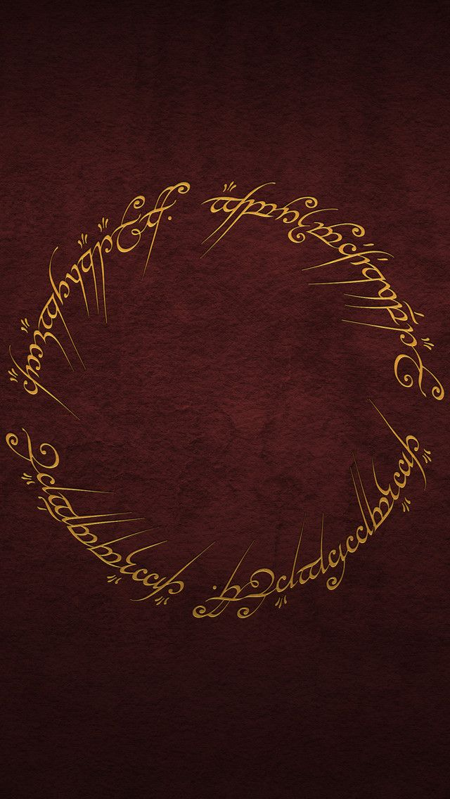

O Senhor dos Anéis (The Lord of the Rings, no original) é uma trilogia de livros de alta fantasia escrita pelo escritor britânico J. R. R. Tolkien.
Escrita entre 1937 e 1949, com muitas partes criadas durante a Segunda Guerra Mundial, a saga é uma continuação de O Hobbit (1937). Embora Tolkien tenha planejado realizá-la em volume único, a obra foi originalmente publicada em três volumes (The Fellowship of the Ring, The Two Towers e The Return of the King) entre 1954 e 1955, e foi assim, em três volumes, que se tornou popular. Desde então, a obra foi reimpressa várias vezes e traduzida para mais de 40 línguas, vendendo mais de 160 milhões de cópias, tornando-se um dos trabalhos mais populares da literatura do século XX.
O "Um Anel" é o elemento central da saga. No anel, em inscrições no alfabeto Tengwar com versos na língua proibida de Mordor, pode ler-se: "Um Anel para todos governar, Um Anel para encontrá-los, Um Anel para a todos trazer e na escuridão aprisioná-los".